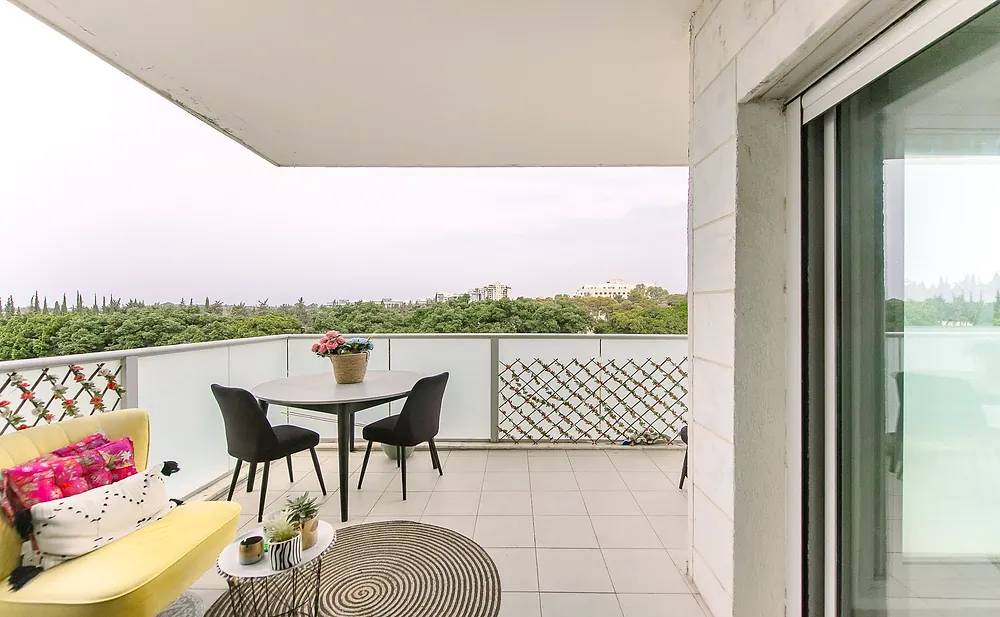
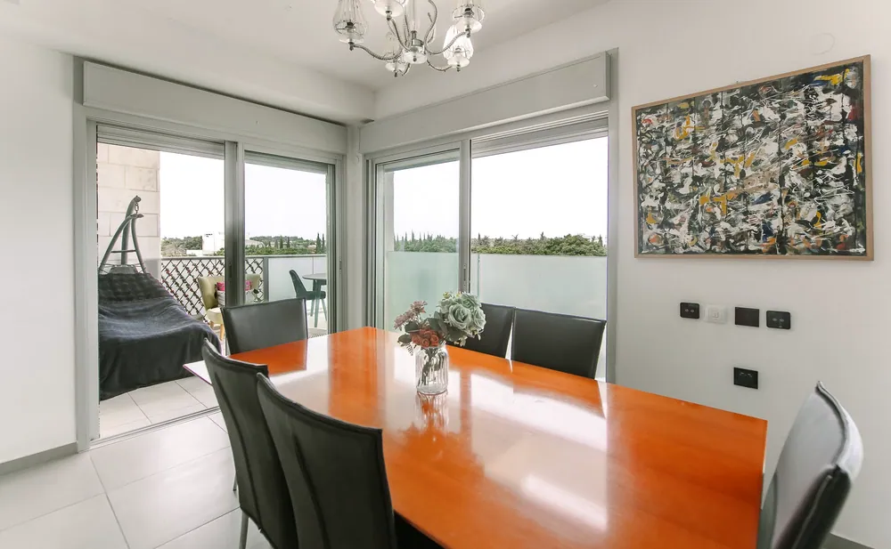
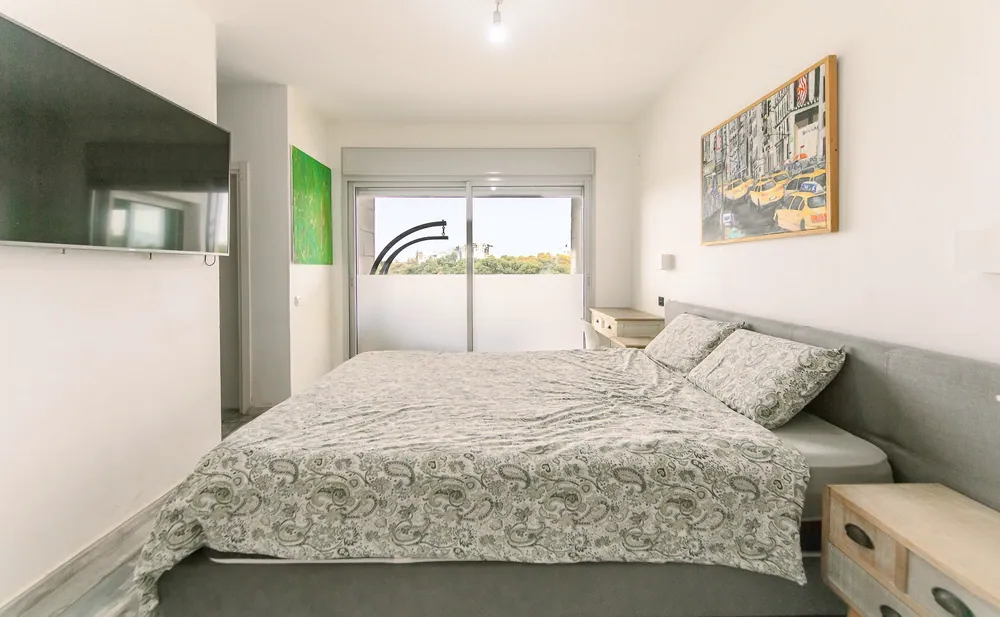
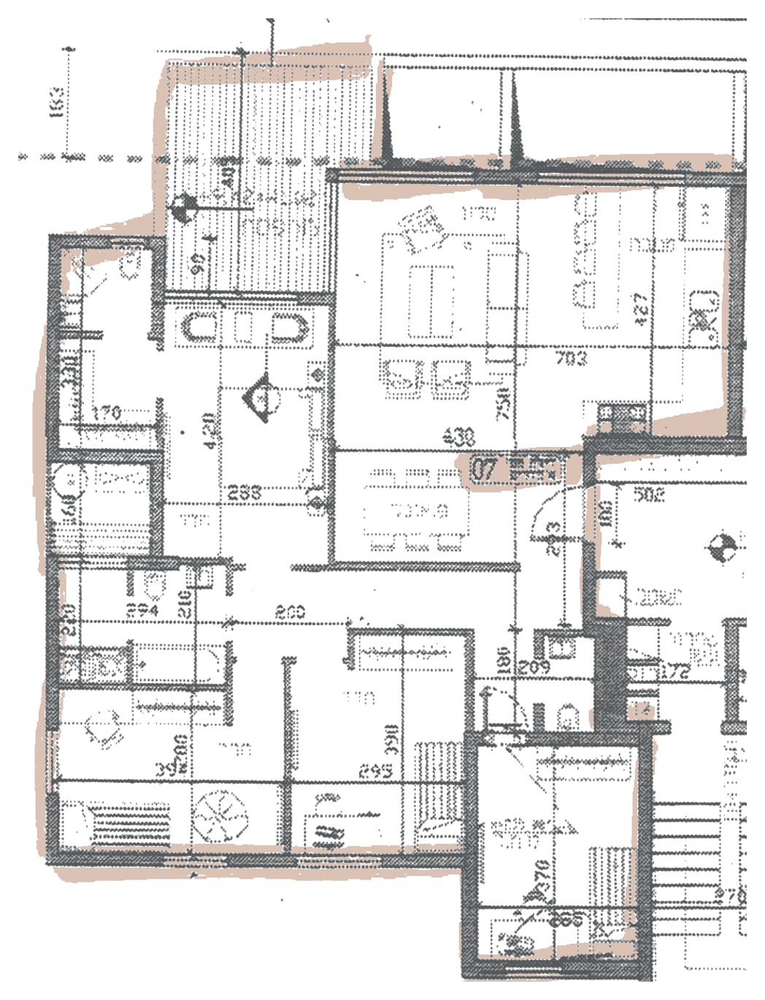
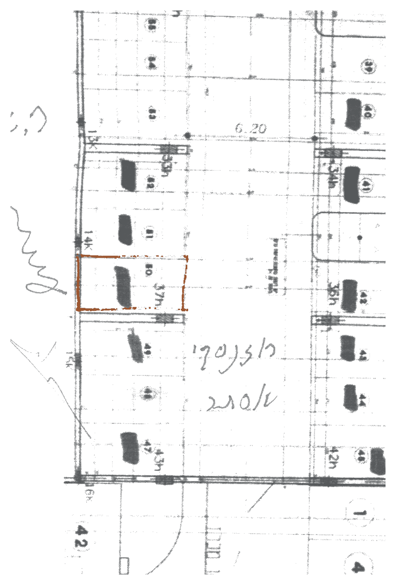
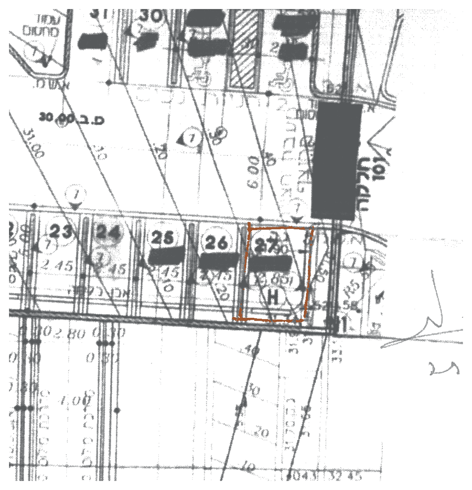
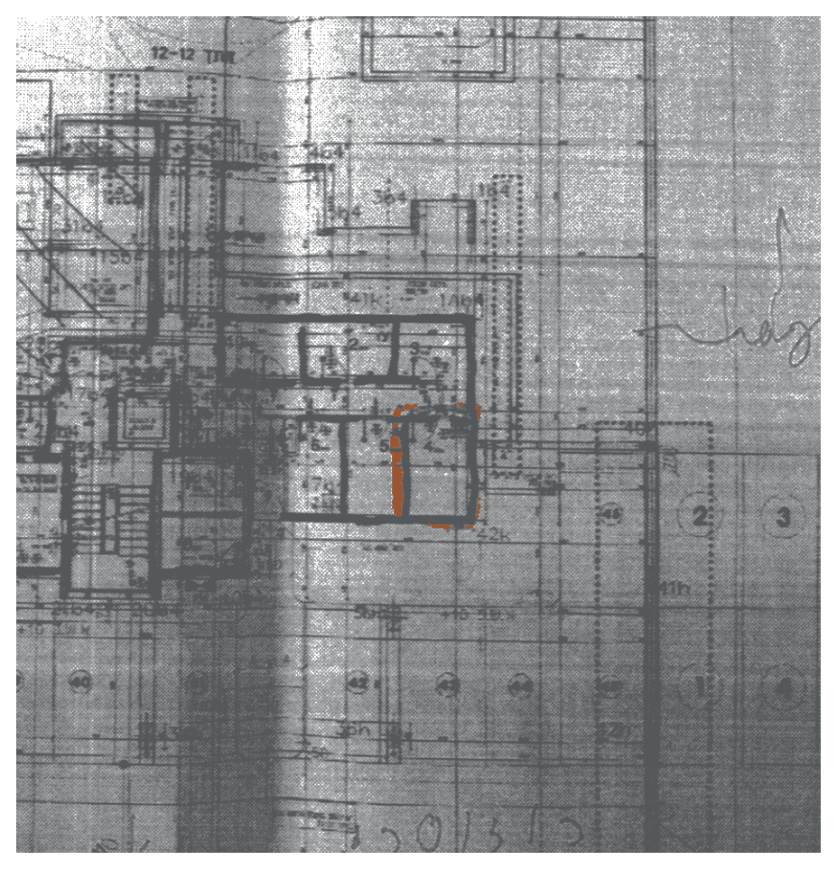

HANA ROVINA 8 · HERZLIYA
חנה רובינא 8
₪4,390,000מחיר מבוקש

THE CORNER · המרפסת הפינתית
לסיור בדירה
בבלעדיות · בוטיק נדל״ן
THE CORNER
דירה בפינה. אור משני כיוונים.




THE BALCONY
המרפסת · צפון ומערב
מרפסת פינתית מקורה, 12 מ״ר.
לחצו על חלון כדי לראות מה רואים ממנו
תוכנית קומה 3, דירה 07. להמחשה בלבד.
THE PRICE
₪4,390,000
5 חדרים · 115 מ״ר + 12 מ״ר מרפסת · קומה 3 מתוך 5
THE KEYS
מה מקבלים עם הדירה.
לחצו על מפתח כדי לראות אותו בתשריט




תשריט סרוק מהיתר הבנייה. להמחשה בלבד.
ממ״ד3 שירותים2 מקלחותמעלית
GALLERY
כל התמונות
THE BUILDING
חנה רובינא 8, הרצליה.

PRIVATE TOUR
רוצים לראות את הדירה?
בחרו מתי נוח לכם, ועמיר יחזור אליכם לתאם.
למי לשלוח?
בבלעדיות · בוטיק נדל״ן הרצליה
עמיר פרסטר